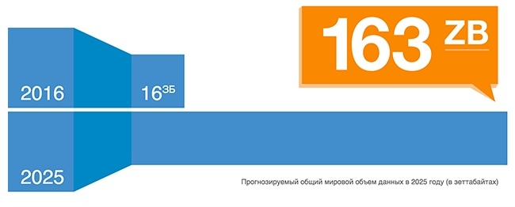
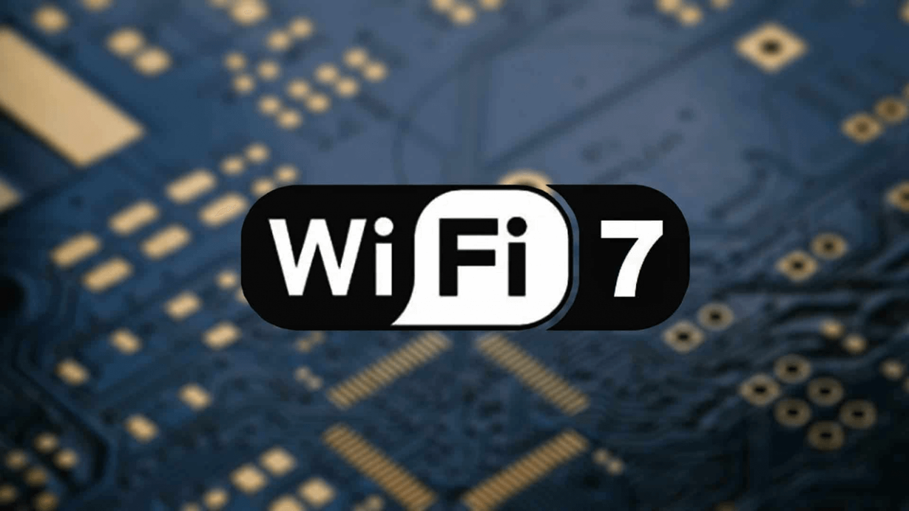

1. Первое сообщение в интернете
Первое сообщение в сети ARPANET было отправлено в 1969 году. Оно должно было быть словом "LOGIN", но система сломалась после ввода первых двух букв – "LO".
2. Поиск в Google
Каждый день Google обрабатывает более 8,5 миллиардов запросов, что составляет около 99 000 запросов в секунду.

3. Первое видео на YouTube
Первое видео под названием "Me at the zoo" было загружено 23 апреля 2005 года.
4. Объём мировых данных
В 2025 году объём мировых данных превысил 163 зеттабайт (1 зеттабайт = 1 триллион гигабайт).

5. Первое электронное письмо
Первое электронное письмо было отправлено Рэйем Томлинсоном в 1971 году самому себе.

6. Facebook за 10 лет
Facebook набрал 1 миллиард пользователей всего за 8 лет после запуска.
7. Пароль 123456
Самый популярный пароль в мире 123456.
8. Wi-Fi изобрели случайно
Технология Wi-Fi была случайно открыта в 1992 году австралийским инженером.

9. Первый биткоин
Первый биткоин-транзакция была отправлена в 2009 году от Сатоши Накамото.

10. Искусственный интеллект
Первый чат-бот ELIZA был создан в 1966 году и мог поддерживать простые разговоры.